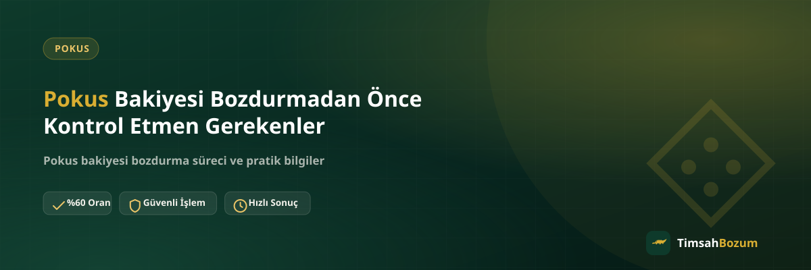

Pokus bakiyeni bozdurmaya karar verdiğinde işlemin hızlı ve sorunsuz ilerlemesi, birkaç basit kontrolü işleme başlamadan önce yapmana bağlı. Ekran görüntüsünün güncelliğinden bakiye tutarının doğru görünmesine kadar birkaç noktayı atlarsan, süreç gereksiz yere uzayabilir. Bu yazıda bozdurmadan önce gözden geçirmen gereken kontrol listesini anlatıyoruz.
Neden Önceden Kontrol Etmeli?
Bozum işlemi, paylaştığın bilginin doğru ve güncel olmasına dayanır. Eksik, bulanık veya güncelliğini yitirmiş bir bilgi, karşı tarafın bunu tekrar senden istemesine ve işlemin gecikmesine yol açar. Aşağıdaki kontrolleri işleme başlamadan önce yaparsan, WhatsApp'ta ilk mesajdan itibaren süreç düzgün ilerler.
Bakiye Ekran Görüntüsü Güncel mi?
Paylaşacağın ekran görüntüsünün, işlemden hemen önce alınmış olması gerekiyor. Eski bir görüntü, bakiyenin o an gerçekten hesapta olup olmadığını göstermez ve doğrulama sürecini geciktirir. Görüntüyü almadan önce uygulamayı bir kez yenileyip güncel tutarın ekranda göründüğünden emin olmak, bu adımı baştan sağlama alır.
Bakiye Tutarı Net ve Okunaklı mı?
Ekran görüntüsü alırken tutarın, tarihin ve varsa hesap bilgisinin net şekilde görünmesine dikkat et. Kırpılmış, bulanık veya karartılmış bir görüntü, karşı tarafın bilgiyi doğrulamasını zorlaştırır ve tekrar görüntü istenmesine sebep olur. Net bir ekran görüntüsü, işlemin ilk turda ilerlemesini sağlayan en basit adımlardan biri.
Güncel Oranı Teyit Ettin mi?
Oranlar piyasa koşullarına göre değişebilir, bu yüzden sitede yayınlanan oranı kesin kabul etmek yerine işlem öncesi WhatsApp'tan teyit etmek en doğrusu. Teyit ettiğin oranı bir ekran görüntüsü olarak saklaman, ileride bir karışıklık çıkarsa referans olması açısından işine yarar. Bu adımı atlamak, iki tarafın da farklı bir sayıyı beklemesine yol açabilir.
Kısmi Bozum Yapıp Yapmayacağına Karar Verdin mi?
Pokus bakiye tabanlı bir hizmet olduğu için bakiyenin tamamını bozdurmak zorunda değilsin, istediğin bir kısmını bozdurup kalanını hesapta bırakabilirsin. İşleme başlamadan önce ne kadarını bozduracağına karar vermen, ilk mesajında net bir tutar belirtmeni sağlar ve karşılıklı soru-cevabı azaltır.
Hesabına Erişim Vermen İstenir mi?
Hayır, bu işlem boyunca hesabına erişim istenmez ve şifre ya da giriş bilgisi talep edilmez. Sen sadece bakiyeni gösteren bir ekran görüntüsü paylaşırsın. Hesabına erişim isteyen veya SMS doğrulama kodu talep eden bir talep gelirse bu, resmi sürecin dışında bir girişimdir ve bilgi paylaşılmamalıdır.
İlk Mesajını Nasıl Yazmalısın?
Süreci en çok hızlandıran şey, ilk mesajının eksiksiz olması. Hangi hizmeti bozduracağını, bozdurmak istediğin tutarı ve güncel bakiye ekran görüntüsünü tek mesajda birlikte göndermek, karşılıklı birkaç mesajlık bilgi alışverişini baştan gereksiz kılar. Örneğin "Pokus bakiyem var, 300 TL'lik kısmını bozdurmak istiyorum" cümlesi ve ekran görüntüsü, ilk turdan itibaren net bir başlangıç sağlar. Buna karşılık sadece "bozum yapıyor musunuz" yazıp beklemek, sürecin başlamasını bir sonraki mesajına erteler.
Birden Fazla Bakiyeyi Aynı Anda Bildirebilir misin?
Elinde Pokus bakiyesinin yanı sıra bir Razer Gold kodun ya da Paycell bakiyen de varsa, hepsini tek mesajda toplu şekilde belirtmek işini kolaylaştırır. Her birini ayrı ayrı, aralıklarla göndermek yerine bilgileri bir arada paylaşman, tek görüşmede birden fazla işlem için oran teyidi almanı sağlar. Bu, hem senin hem karşındaki hattın zamanını korur.
Pokus Bakiyesi Bozdurmak Güvenilir mi?
Güvenilir bir bozum hizmetinde üyelik, form doldurma veya kimlik belgesi istenmez. Pokus bozdurma sürecinde tek ihtiyacın, güncel bakiyeni gösteren okunaklı bir ekran görüntüsü ve WhatsApp üzerinden iletişim. Resmi numara dışında bir kanaldan gelen taleplere bilgi paylaşmadan önce numarayı doğrulamak, olası bir dolandırıcılık girişimine karşı en basit önlem.
İşlem Ne Zaman Başlar, Ne Kadar Sürer?
TimsahBozum her gün 10:00 ile 03:00 arası aktif. Bu saatler dışında gönderdiğin mesaj kaybolmaz, hat açıldığında yanıtlanır. İşlemin süresi; bilginin eksiksiz paylaşılması ve oranın teyit edilmesi kadar hızlı ilerler, kesin bir süre vermek yerine güncel bilgiyi WhatsApp'tan teyit etmek en doğrusu.
Bozum İşlemi İçin Üyelik veya Belge Gerekiyor mu?
Hayır. İşlem için üyelik oluşturmana, form doldurmana veya kimlik belgesi göndermene gerek yok. Tek ihtiyacın, güncel bakiyeni gösteren okunaklı bir ekran görüntüsü ve WhatsApp üzerinden iletişim kurmak. Üyelik veya belge isteyen bir kanal karşına çıkarsa, bunun resmi süreçle ilgisi olmadığını bilmen önemli.
Kontrolleri Atlarsan Ne Olur?
Yukarıdaki kontrollerden birini atlamak işlemi iptal etmez, ama geciktirir. Eski bir ekran görüntüsü, tutarı sormadan paylaşılan eksik bilgi ya da oranı teyit etmeden beklemeye geçmek, karşılıklı birkaç mesaj daha yazılmasına neden olur. Bu kontrolleri baştan yapmak, hem senin hem de karşındaki hattın zamanını korur.
Kontrol listesini gözden geçirdikten sonra bakiyeni bozdurmaya hazırsan, güncel oranı ve süreci öğrenmek için WhatsApp hattımıza yazarak hemen başlayabilirsin.
İlgili Yazılar
- Pokus Bakiyesi Nedir, Nasıl Oluşur?
- Bozum İşlemi Yaparken Nelere Dikkat Etmeli
- En Güvenilir Mobil Ödeme Bozdurma Sitesi Nasıl Seçilir?